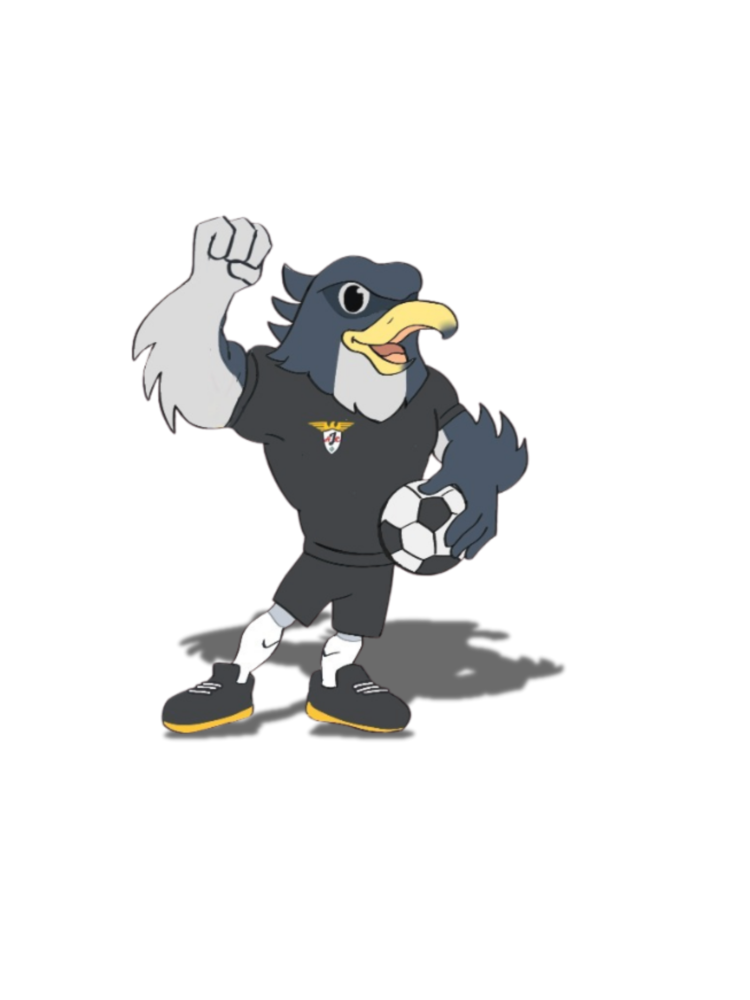

AL-AMIN JUNIOR
CHALLENGE 2026
Turnamen Futsal, Badminton, dan Tenis Meja pelajar SD/MI dan SMP/MTs sederajat persembahan OSIS MTs-MA Pesantren Al-Amin Mojokerto. Panggung bergengsi bagi calon atlet berprestasi untuk mengukir sejarah, menjunjung sportivitas.
3
Cabang Olahraga Utama
Sertifikat
Seluruh Tim & Peserta
SD/MI
Futsal
SMP/MTs
Badminton & Tenis Meja
Apa Itu AJC 2026?
Al-Amin Junior Challenge (AJC 2026) adalah ajang multi-event turnamen olahraga pelajar tingkat SD/MI dan SMP/MTs sederajat yang diselenggarakan secara profesional oleh OSIS MTs-MA Pesantren Al-Amin Mojokerto.
Dengan memadukan energi sportivitas kompetisi dan atmosfer pesantren, AJC hadir sebagai wadah pembentukan mental juara, persahabatan (ukhuwah) antar sekolah, dan penelusuran bibit unggul atlet muda berbakat.

Cabang Olahraga
Pilih cabang olahraga dan unduh Juknis perlombaan melalui tautan di bawah ini.
Futsal SD/MI
Turnamen sistem gugur dengan intensitas tinggi. Adu taktik, kecepatan, dan kerja sama tim di lapangan eksklusif Sport Center Pesantren Al-Amin.
Badminton SMP/MTs
Kategori Tunggal Putra & Putri. Pertarungan kelincahan, akurasi smash, dan mental juara di atas lapangan karpet berstandar turnamen.
Tenis Meja SMP/MTs
Kategori Tunggal Putra & Putri dengan menggunakan sistem grup. Menguji refleks kilat, variasi spin bola, ketahanan rally, dan konsentrasi tingkat tinggi.
Jadwal Penting
Catat tanggalnya dan pastikan kontingen sekolahmu tidak tertinggal!
Pendaftaran Terbuka
Pendaftaran online dibuka untuk cabang olahraga Futsal SD/MI & Tenis Meja SMP/MTs, dan segera hadir cabang olahraga badminton. Segera daftar karena kuota tiap cabor sangat dibatasi.
Technical Meeting
Pengundian bagan/grup, penjelasan Juknis semua cabor, dan sesi tanya jawab official di Pondok Pesantren Al-Amin Putra Mojokerto.
Pelaksanaan Turnamen Futsal
Pertandingan seru dari babak penyisihan hingga grand final perebutan gelar juara AJC 2026 di Pondok Pesantren Al-Amin Putra Mojokerto.
Pelaksanaan Turnamen Tenis Meja
Pertandingan seru dari babak penyisihan hingga grand final perebutan gelar juara AJC 2026 di Pondok Pesantren Al-Amin Putra Mojokerto.
Pelaksanaan Turnamen Badminton
Pelaksanaan pertandingan babak utama hingga upacara penutupan dan penyerahan hadiah sebagai bentuk apresiasi atas sportivitas para atlet.
Match Result
Hasil pertandingan Futsal Al-Amin Junior Challenge 2026.
Hubungi Panitia Resmi
Butuh informasi Juknis atau panduan pendaftaran? Hubungi Contact Person resmi panitia.
Siap Menjadi Juara AJC 2026?
Kumpulkan atlet-atlet terbaik sekolahmu. Raih piala bergengsi, uang pembinaan jutaan rupiah.